<title>그림 속 글자 줄이기</title>
<meta charset="utf-8">
<style>
  :root{
    --bg:#f7f6f3; --card:#fff; --ink:#1c1b19; --muted:#6b6862;
    --line:#e3e0da; --accent:#c2410c; --ok:#15803d; --warn:#b45309;
  }
  @media (prefers-color-scheme:dark){:root:not([data-theme="light"]){
    --bg:#16151a; --card:#1f1e24; --ink:#eceaf0; --muted:#a3a0ab;
    --line:#33313b; --accent:#fb923c; --ok:#4ade80; --warn:#fbbf24;
  }}
  :root[data-theme="dark"]{
    --bg:#16151a; --card:#1f1e24; --ink:#eceaf0; --muted:#a3a0ab;
    --line:#33313b; --accent:#fb923c; --ok:#4ade80; --warn:#fbbf24;
  }
  body{background:var(--bg);color:var(--ink);font:16px/1.65 "Malgun Gothic","Segoe UI",system-ui,sans-serif;
       margin:0;padding:40px 20px 80px}
  main{max-width:880px;margin:0 auto}
  h1{font-size:28px;line-height:1.3;margin:0 0 6px;letter-spacing:-.02em}
  .sub{color:var(--muted);margin:0 0 36px;font-size:14px}
  h2{font-size:19px;margin:44px 0 14px;padding-bottom:8px;border-bottom:2px solid var(--line)}
  h3{font-size:15px;margin:26px 0 8px;color:var(--accent)}
  section{background:var(--card);border:1px solid var(--line);border-radius:12px;padding:4px 24px 24px;margin-bottom:8px}
  .tw{overflow-x:auto;margin:14px 0}
  table{border-collapse:collapse;width:100%;font-size:14px;min-width:460px}
  th,td{padding:7px 10px;text-align:left;border-bottom:1px solid var(--line);vertical-align:top}
  th{font-weight:600;color:var(--muted);font-size:12.5px;text-transform:uppercase;letter-spacing:.04em}
  tr:last-child td{border-bottom:none}
  code{background:var(--bg);border:1px solid var(--line);border-radius:4px;padding:1px 5px;font-size:13px;
       font-family:Consolas,"Cascadia Mono",monospace}
  ul{padding-left:20px} li{margin:6px 0}
  ol{padding-left:22px} ol li{margin:8px 0}
  .tag{display:inline-block;font-size:12px;padding:2px 9px;border-radius:99px;border:1px solid currentColor;
       font-weight:600;vertical-align:middle}
  .ok{color:var(--ok)} .warn{color:var(--warn)} .bad{color:var(--accent)}
  .note{border-left:3px solid var(--warn);background:var(--bg);padding:12px 16px;border-radius:0 8px 8px 0;margin:16px 0}
  .note p{margin:6px 0}
  .lead{font-size:17px}
  figure{margin:0}
  .pair{display:flex;gap:14px;flex-wrap:wrap;margin:18px 0;align-items:flex-start}
  .pair figure{flex:1 1 200px;min-width:170px}
  .pair img{width:100%;display:block;border:1px solid var(--line);border-radius:8px;background:var(--bg)}
  .pair figcaption{font-size:12.5px;color:var(--muted);margin-top:8px;text-align:center;line-height:1.5}
  .shots{display:flex;gap:14px;flex-wrap:wrap;margin:18px 0}
  .shots figure{flex:1 1 220px;max-width:280px}
  .shots img{width:100%;display:block;border:1px solid var(--line);border-radius:8px}
  .shots figcaption{font-size:12.5px;color:var(--muted);margin-top:8px;text-align:center}
</style>

<main>
<h1>그림 속 글자를 0.7배로</h1>
<p class="sub">심심할 때 하는 게임 &middot; 2026-09-09 &middot; <code>@리소스 추가_1차</code> 그림 6장 &middot; 0.5배로 한 번 뽑아 본 뒤 <strong>0.7배로 확정</strong> &middot; 배치 모드 확인 완료</p>

<section>
<h2>한 줄 요약</h2>
<p class="lead"><strong>버튼과 팝업 그림 안에 그려져 있던 글자만 0.7배로 줄였습니다.</strong>
판·테두리·장식은 손대지 않았으므로 <strong>게임 안에서의 버튼 크기와 자리는 그대로</strong>입니다. 글자만 작아졌습니다.</p>

<div class="tw"><table>
<tr><th>파일</th><th>글자</th><th>원래 글자 크기</th><th>바뀐 크기</th></tr>
<tr><td><code>Ok_Button.png</code></td><td>확인</td><td>905 &times; 508</td><td>634 &times; 356</td></tr>
<tr><td><code>Cancel_Button.png</code></td><td>취소</td><td>899 &times; 493</td><td>629 &times; 345</td></tr>
<tr><td><code>End_Button.png</code></td><td>종료</td><td>884 &times; 477</td><td>619 &times; 334</td></tr>
<tr><td><code>Close_Button.png</code></td><td>닫기</td><td>912 &times; 499</td><td>638 &times; 349</td></tr>
<tr><td><code>Popup_01.png</code></td><td>로비로 나가시겠습니까?</td><td>977 &times; 108</td><td>684 &times; 76</td></tr>
<tr><td><code>Popup_02.png</code></td><td>종료하시겠습니까?</td><td>867 &times; 116</td><td>607 &times; 81</td></tr>
</table></div>

<p><strong>가로·세로를 각각 0.7배</strong>로 줄였습니다(넓이로는 약 절반).
글자의 중심 자리는 그대로 두었으므로 버튼 한가운데, 팝업의 같은 높이에 그대로 있습니다.</p>

<p>처음에 요청하신 대로 <strong>0.5배(절반)로 한 번 만들어 보고, 화면에서 보니 너무 작아 0.7배로 다시 뽑았습니다.</strong>
아래 그림과 화면은 모두 0.7배입니다.</p>

<p><code>Setting.png</code>(톱니바퀴) &middot; <code>Undo.png</code>(화살표) &middot; <code>Empty_Pannel.png</code>(빈 판)
세 장은 글자가 없어서 <strong>건드리지 않았습니다.</strong></p>
</section>

<section>
<h2>그림으로 보기</h2>

<div class="pair">
<figure>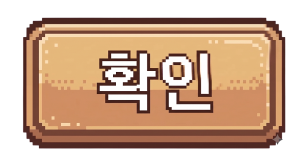<figcaption>확인 &mdash; 전</figcaption></figure>
<figure>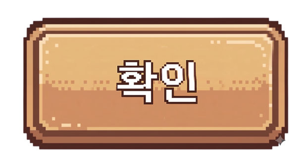<figcaption>확인 &mdash; 후</figcaption></figure>
</div>
<div class="pair">
<figure>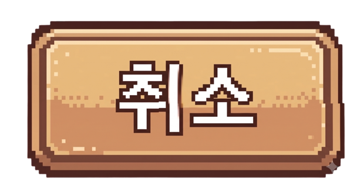<figcaption>취소 &mdash; 전</figcaption></figure>
<figure>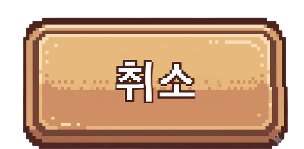<figcaption>취소 &mdash; 후</figcaption></figure>
</div>
<div class="pair">
<figure>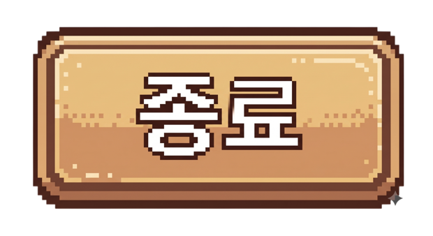<figcaption>종료 &mdash; 전</figcaption></figure>
<figure>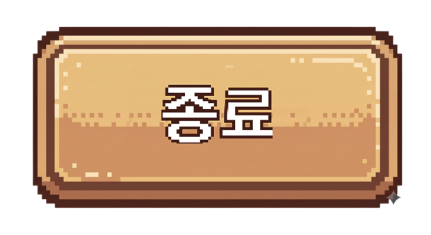<figcaption>종료 &mdash; 후</figcaption></figure>
</div>
<div class="pair">
<figure>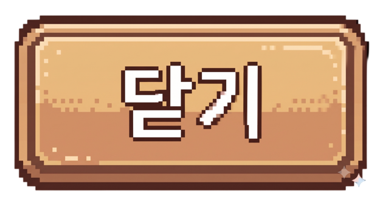<figcaption>닫기 &mdash; 전</figcaption></figure>
<figure>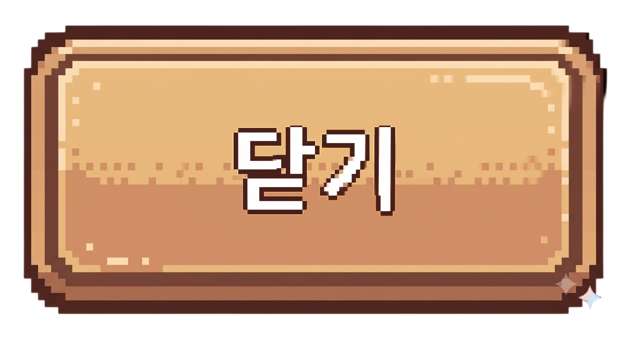<figcaption>닫기 &mdash; 후</figcaption></figure>
</div>
<div class="pair">
<figure>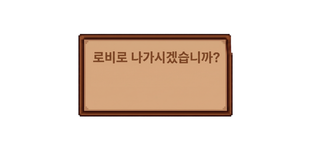<figcaption>로비로 나가시겠습니까? &mdash; 전</figcaption></figure>
<figure>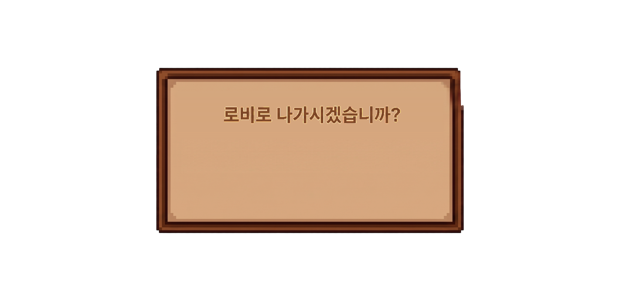<figcaption>후</figcaption></figure>
</div>
<div class="pair">
<figure>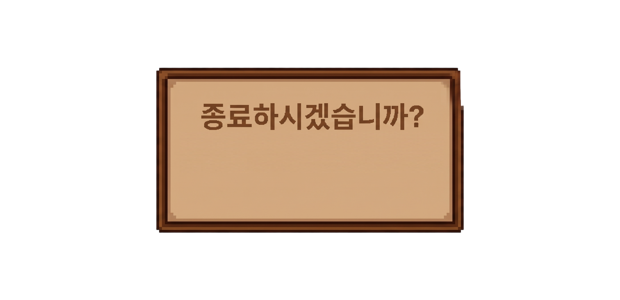<figcaption>종료하시겠습니까? &mdash; 전</figcaption></figure>
<figure>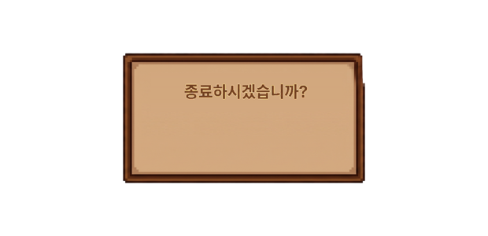<figcaption>후</figcaption></figure>
</div>
</section>

<section>
<h2>게임 화면에서</h2>
<p>배치 모드로 팝업을 켜서 찍은 화면입니다. 그림이 실제로 갈아 끼워졌고, 버튼 크기와 자리는 전과 같습니다.</p>

<p>아래 세 장 모두 <strong>0.7배 그림이 들어간 뒤</strong> 다시 찍은 화면입니다.</p>

<div class="shots">
<figure>
  <figcaption>로비 &mdash; 종료하시겠습니까?</figcaption></figure>
<figure>
  <figcaption>로비 &mdash; 설정 ([종료] [닫기])</figcaption></figure>
<figure>
  <figcaption>점프점프 &mdash; 로비로 나가시겠습니까?</figcaption></figure>
</div>

<div class="note">
<p><strong>배율은 언제든 다시 바꿀 수 있습니다.</strong> 원본이 그대로 남아 있어서 0.6배든 0.8배든
몇 번이든 다시 뽑을 수 있습니다 &mdash; 아래 "다시 뽑는 방법" 참고.</p>
</div>
</section>

<section>
<h2>어떻게 줄였나</h2>
<p>글자가 그림 안에 그려져 있어서, <strong>글자만 떼어내고 그 자리를 메운 다음 작게 다시 얹는</strong> 방식입니다.</p>
<ol>
<li><strong>글자 찾기</strong> &mdash; 판의 배경색과 색이 크게 다른 곳을 글자로 봅니다.
    (버튼은 흰 글자 + 진한 테두리, 팝업은 진한 갈색 글자)</li>
<li><strong>자리 메우기</strong> &mdash; 버튼은 <em>같은 줄의 옆 배경</em>을 좌우로 반복해 채웁니다.
    그래야 위아래 명암 차이와 가운데 점선 무늬가 그대로 이어집니다.
    팝업은 판 안이 고른 색이라 그 줄의 배경색으로 평평하게 채웁니다.
    메운 자리의 가장자리는 원래 그림과 부드럽게 섞어 이음매가 선으로 보이지 않게 했습니다.</li>
<li><strong>다시 얹기</strong> &mdash; 떼어낸 글자를 0.7배로 줄여 <em>같은 중심</em>에 올립니다.</li>
</ol>
<p>테두리 · 모서리 장식 · 오른쪽 아래 반짝임은 전혀 건드리지 않았습니다.
투명 여백을 자른 뒤의 그림 크기도 전과 같아서 <strong>게임 안에서 버튼이 커지거나 작아지지 않습니다.</strong></p>
</section>

<section>
<h2>원본과 되돌리는 방법</h2>
<p>바꾸기 전의 그림 9장을 통째로 <code>D:\00.JumpJump\리소스_원본_1차\</code> 에 넣어 두었습니다.</p>

<h3>되돌리려면</h3>
<ol>
<li><code>리소스_원본_1차\</code> 의 PNG 를 <code>@리소스 추가_1차\</code> 에 덮어씁니다.</li>
<li>Unity 에서 <strong>Tools &gt; Arcade &gt; Build All Scenes</strong>.</li>
</ol>

<h3>다시 뽑는 방법 (0.6배 · 0.8배로 바꾸고 싶을 때)</h3>
<p>같은 폴더의 <code>글자_줄이기.py</code> 가 이번에 쓴 스크립트입니다.
<strong>원본을 되돌린 뒤</strong> 배율을 붙여 실행하면 됩니다.</p>
<p><code>python 글자_줄이기.py &lt;결과를 담을 폴더&gt; 0.6</code></p>
<p>(이미 줄인 그림에 또 돌리면 안 됩니다 &mdash; 반드시 원본에서 시작해야 합니다.)</p>
<p>말씀만 주시면 원하는 배율로 제가 다시 뽑아 드리겠습니다.</p>
</section>

<section>
<h2>확인한 것</h2>
<div class="tw"><table>
<tr><th>확인</th><th>결과</th></tr>
<tr><td>Build All Scenes (씬 4장 + 리소스 가져오기)</td><td><span class="tag ok">통과</span> 컴파일 오류 0건, 그림 6장 새로 들어옴</td></tr>
<tr><td>타이틀 / 로비 미리보기 + 팝업 2종</td><td><span class="tag ok">통과</span> 종료 팝업 &middot; 설정 팝업 정상</td></tr>
<tr><td>점프점프 미리보기 + 나가기 팝업</td><td><span class="tag ok">통과</span> 로비로 나가기 팝업 정상</td></tr>
<tr><td>그림 바깥 크기 (여백 자른 뒤)</td><td><span class="tag ok">그대로</span> 버튼 &middot; 팝업 크기 변화 없음</td></tr>
</table></div>
<p class="sub" style="margin-top:18px">폰에서 보시려면 APK 를 다시 구워야 합니다
(<code>Tools &gt; JumpJump &gt; Build Android APK</code>, 10분 이상). 지금 작업 폴더의 APK 는 09-07 것입니다.</p>
</section>

</main>
